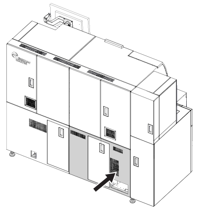

This topic includes information about how to identify system serial COM ports for LAS or Middleware/LIS connections.
Note: This procedure is useful during installation or after you reimage the PC.
Follow the steps below to identify serial (COM) ports on the system. This process is required to understand which port to connect to at the back of the system.
Remove the lower right rear instrument cover (4 screws; three at the top beneath the bi-fold door, and one behind the reagent pump access door) to gain access to the internal USB hub and cables.
Note: The RS-232 Serial ports at the back of the system are connected via USB internally.
Figure 95: RS-232 Serial Ports Location

Follow the serial-to-USB converter cable from the back of the serial port to the USB hub.
Compare the list to the picture or screenshot of the list and note any differences. One of the USB Serial Port (COM##) listings that was present in the picture or screenshot will now be missing. This is the port for the designated serial port at the rear of the instrument.
Check Device Manager to confirm the port is present again.
Repeat above steps to identify the other serial port if both are needed for connecting external devices (i.e. LAS and LIS connection via serial cable are both needed).